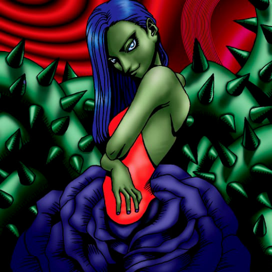

Arlownay

STATS
ATK: 800
DEF: 1000DECK COST
Deck Cost per Card: 18Fusion List (60 Possible Fusions)
- Arlownay + Abyss Flower = Queen of Autumn Leaves
- Arlownay + Ancient Jar = Mystical Sand
- Arlownay + Armed Ninja = Bean Soldier
- Arlownay + Baby Dragon = B. Dragon Jungle King
- Arlownay + Burglar = Flower Wolf
- Arlownay + Candle of Fate = Rose Spectre of Dunn
- Arlownay + Corroding Shark = Pumpking the King of Ghosts
- Arlownay + Crawling Dragon = B. Dragon Jungle King
- Arlownay + Dancing Elf = Queen of Autumn Leaves
- Arlownay + Dark Plant = Queen of Autumn Leaves
- Arlownay + Dark Prisoner = Rose Spectre of Dunn
- Arlownay + Dragon Zombie = Pumpking the King of Ghosts
- Arlownay + Embryonic Beast = Rose Spectre of Dunn
- Arlownay + Fire Reaper = Wood Remains
- Arlownay + Firegrass = Queen of Autumn Leaves
- Arlownay + Flame Ghost = Pumpking the King of Ghosts
- Arlownay + Fungi of the Musk = Rose Spectre of Dunn
- Arlownay + Ghoul with an Appetite = Pumpking the King of Ghosts
- Arlownay + Goddess with the Third Eye = Queen of Autumn Leaves
- Arlownay + Griggle = Queen of Autumn Leaves
- Arlownay + Guardian of the Labyrinth = Bean Soldier
- Arlownay + Happy Lover = Dark Witch
- Arlownay + Horn Imp = Rose Spectre of Dunn
- Arlownay + Hyo = Bean Soldier
- Arlownay + Key Mace = Queen of Autumn Leaves
- Arlownay + Little Chimera = Nekogal #2
- Arlownay + Living Vase = Queen of Autumn Leaves
- Arlownay + Lord of the Lamp = Rose Spectre of Dunn
- Arlownay + Lunar Queen Elzaim = Queen of Autumn Leaves
- Arlownay + M-Warrior #1 = Bean Soldier
- Arlownay + M-Warrior #2 = Bean Soldier
- Arlownay + Magical Ghost = Pumpking the King of Ghosts
- Arlownay + Man-Eating Plant = Queen of Autumn Leaves
- Arlownay + Man Eater = Queen of Autumn Leaves
- Arlownay + Mask of Darkness = Rose Spectre of Dunn
- Arlownay + Mech Mole Zombie = Wood Remains
- Arlownay + Moon Envoy = Bean Soldier
- Arlownay + Mystery Hand = Rose Spectre of Dunn
- Arlownay + Needle Ball = Rose Spectre of Dunn
- Arlownay + One-Eyed Shield Dragon = B. Dragon Jungle King
- Arlownay + Petit Dragon = B. Dragon Jungle King
- Arlownay + Phantom Ghost = Wood Remains
- Arlownay + Queen's Double = Queen of Autumn Leaves
- Arlownay + Sinister Serpent = Snakeyashi
- Arlownay + Skull Servant = Wood Remains
- Arlownay + Supporter in the Shadows = Bean Soldier
- Arlownay + Synchar = Nekogal #2
- Arlownay + The 13th Grave = Pumpking the King of Ghosts
- Arlownay + The Shadow Who Controls the Dark = Rose Spectre of Dunn
- Arlownay + Torike = Nekogal #2
- Arlownay + Unknown Warrior of Fiend = Bean Soldier
- Arlownay + Versago the Destroyer = Rose Spectre of Dunn
- Arlownay + Water Element = Queen of Autumn Leaves
- Arlownay + Waterdragon Fairy = Queen of Autumn Leaves
- Arlownay + Weather Control = Dark Witch
- Arlownay + Witty Phantom = Rose Spectre of Dunn
- Arlownay + Wretched Ghost of the Attic = Rose Spectre of Dunn
- Arlownay + Yamatano Dragon Scroll = B. Dragon Jungle King
- Arlownay + Yashinoki = Queen of Autumn Leaves
- Arlownay + Zombie Warrior = Pumpking the King of Ghosts